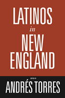

<body bgcolor="#FFFFFF" text="#000000" link="#0000FF" vlink="#CC0000" alink="#CC0000"><center><hr width="350" size="1" align="center" noshade>The first comprehensive look at the growing Latino presence in New England<hr width="350" size="1" align="center" noshade><p><a href="https://cdcshoppingcart.uchicago.edu/Cart/ChicagoBook.aspx?ISBN=9781592134168&&PRESS=temple" target="_top">Buy this book!</a> | <a href="https://cdcshoppingcart.uchicago.edu/Cart/Cart.aspx?PRESS=temple" target="_top">View Cart</a> | <a href="https://cdcshoppingcart.uchicago.edu/Cart/Cart.aspx?PRESS=temple" target="_top">Check Out</a></p><p></p></center><!--none//--><h1>Latinos in New England</h1>
<h3>edited by Andr�s Torres</h3>
<P>cloth 1-59213-416-5 $90.50, Jun 06, <FONT COLOR=#990033>Available</FONT>
<br>paper 1-59213-417-3 $33.95, Jun 06, <FONT COLOR=#990033>Available</FONT>
<br>Electronic Book 1-59213-418-1 $33.95 <FONT COLOR=#990033>Available</FONT>
<BR> 344 pp
6x9
17&nbsp;tables 14&nbsp;figures 13&nbsp;halftones
</P><BLOCKQUOTE><I>"</i>Latinos in New England<i> is an important and wide-ranging collection that is sure to guide readers and researchers into unknown and neglected areas within Latino, ethnic and urban studies. From Latino class differentiation, suburbanization trends, the current state of Latino politics, and the relatively long history of Latinos in supposedly 'new' urban and suburban enclaves, this is a volume that no serious scholar can ignore."</i>
<br>&#151;<b>Arlene Davila</b>, American Studies and Anthropology, New York University<i></I></BLOCKQUOTE>
<p>More than one million Latinos now live in New England. This is the first book to examine their impact on the region's culture, politics, and economics. At the same time, it investigates the effects of the locale on Latino residents' lives, traditions, and institutions.
<p>Employing methodologies from a variety of disciplines, twenty-one contributors explore topics in three broad areas: demographic trends, migration and community formation, and identity and politics. They utilize a wide range of approaches, including oral histories, case studies, ethnographic inquiries, focus group research, surveys, and statistical analyses. From the "Dominicanization" of the Latino community in Waterbury, Connecticut, to the immigration experiences of Brazilians in Massachusetts, from the influence of Latino Catholics on New England's Catholic churches to the growth of a Latino community in Providence, Rhode Island, the essays included here contribute to a new and multifaceted view of the growing Pan-Latino presence in the birthplace of the United States.
<BR>&nbsp;<h2>Excerpt</h2><P>Excerpt available at <a href="http://www.temple.edu/tempress">www.temple.edu/tempress</a></p>
<BR>&nbsp;<h2>Reviews</h2>
<p><i>"Books like </i>Latinos in New England<i> will be the mortar to building cross-cultural bridges. One of the contributions of this book lies in the fact that it does not retell or recount demographics. Instead it uses the data to lay open other avenues of inquiry and other ways of learning.... I highly recommend </i>Latinos in New England<i> not only for academic purposes but for those who think outside the box and those who believe that one size does not fit all. The United States is after all an unfinished and evolving nation."</i>
<br>&#151;<b>Linda C. Delgado</b>, Board of Directors, Chair of Publications, National Association for Ethnic Studies, Inc.
<p><i>"</i>Latinos in New England<i> provides a look at a region not much studied before. Its broad spectrum opens an opportunity to explore differences and similarities of the Latino experience in different contexts. The emphasis on the relationship of different Latino demographic groups runs throughout the book and enriches its conceptual framework."</i>
<br>&#151;<b>Blanca G. Silvestrini</b>, University of Connecticut
<p><i>"These 14 newly commissioned articles...offer a fine multifaceted view of the rapidly expanding Latino communities in New England. Articles overlap enough to provide continuity without undue repetition. Happily, they are all of good quality, and some...are outstanding...[T]his is a model composite view of Latino immigration....Highly recommended."</i>
<br>&#151;<b><i>Choice</i></b>
<p><i>"Revealing the long history of Latinas/os in New England is simultaneously an important scholarly and political move....[T]he articles in this anthology make a timely intervention by debunking the persistent myths and misunderstandings of Latin American immigrants and Latinos...Each of these essays provides a compelling examination into the various ways that Latina/o communities have contributed economic, cultural, social, and political vitality to a region[.]"</i>
<br>&#151;<b><i>Centro: Journal of the Center for Puerto Rican Studies</i></b>
<p><i>�All of the contributors offer rich work on New England�s Latinos and great possibilities for comparative scholarship�.[T]his edited collection proves that it is a prime region for examining the spectrum of Latino experiences across the U.S.�</i>
<br>&#151;<b><i>The Journal of American Ethnic History</i></b>
<BR>&nbsp;<h2>Contents</h2><P>
<p>List of Tables and Figures
<br>Acknowledgments
<br>Latinos in New England: An Introduction &#150; Andr�s Torres
<p><b>Part I: Demographic Trends, Socioeconomic Issues</b>
<br>1. Latino New England: An Emerging Demographic and Economic Portrait &#150; Enrico A. Marcelli and Phillip J. Granberry
<br>2. Immigration Status, Employment, and Eligibility for Public Benefits among Latin American Immigrants in Massachusetts &#150; Miren Uriarte, Phillip J. Granberry, and Megan Halloran
<br>3. Latino Shelter Poverty in Massachusetts &#150; Michael E. Stone
<p><b>Part II: Migration and Community Formation</b>
<br>4. Mofongo Meets Mang�: Dominicans Reconfigure Latino Waterbury &#150; Ruth Glasser
<br>5. Growing into Power in Rhode Island &#150; Miren Uriarte
<br>6. Quiet Crisis: A Community History of Latinos in Cambridge, Massachusetts &#150; Deborah Pacini Hernandez
<br>7. Latinos in New Hampshire: Enclaves, Diasporas, and an Emerging Middle Class &#150; Yoel Camayd-Freixas, Gerald Karush, and Nelly Lejter
<br>8. Brazilians in Massachusetts: Migration, Identity, and Work &#150; C. Eduardo Siqueira and Cileine de Louren�o
<br>9. Latino Catholics in New England &#150; Hosffman Ospino
<p><b>Part III: Identity and Politics</b>
<br>10. Descriptive Representation, Political Alienation, and Political Trust: The Case of Latinos in Connecticut &#150; Adrian D. Pantoja
<br>11. Latino Politics in Connecticut: Between Political Representation and Policy Responsiveness &#150; Jos� E. Cruz
<br>12. Immigrant Incorporation among Dominicans in Providence, Rhode Island: An Intergenerational Perspective &#150; Jos� Itzigsohn
<br>13. Politics, Ethnicity, and Bilingual Education in Massachusetts: The Case of Referendum Question 2 &#150; Jorge Capetillo-Ponce and Robert Kramer
<br>14. The Evolving State of Latino Politics in New England &#150; Am�lcar Antonio Barreto
<p>Selected Bibliography
<br>Notes on Contributors
<br>Index
<br><i>Photographs follow page 222</i>
</P><BR>&nbsp;<H2>About the Author(s)</H2>
<table><tr><td valign="top"><img src="/tempress/authors/1814_au.gif" height="90" width="75"></td><td width="100%" valign="middle"><p><b>Andr�s Torres</b> is Research Associate at the Center for Puerto Rican Studies, Hunter College, City University of New York. Until recently he was Director of the Mauricio Gast�n Institute for Latino Community Development and Public Policy at the University of Massachusetts at Boston. He is past president of the Puerto Rican Studies Association and is the author of several books, including <i><a href="1352_reg.html" target="_top">The Puerto Rican Movement: Voices from the Diaspora</a></i> (Temple).</P></td></tr></table>
<BR><H2>Subject Categories</H2>
<p><A HREF="/tempress/latino.html" TARGET="_top">Latino/a Studies</a>
<BR><A HREF="/tempress/sociology.html" TARGET="_top">Sociology</a>
<BR><A HREF="/tempress/immigration.html" TARGET="_top">Immigration Studies</a>
</p>
<p align="center"><a href="https://cdcshoppingcart.uchicago.edu/Cart/ChicagoBook.aspx?ISBN=9781592134168&&PRESS=temple" target="_top">Buy this book!</a> | <a href="https://cdcshoppingcart.uchicago.edu/Cart/Cart.aspx?PRESS=temple" target="_top">View Cart</a> | <a href="https://cdcshoppingcart.uchicago.edu/Cart/Cart.aspx?PRESS=temple" target="_top">Check Out</a></p><p><font face="Arial" size="1"><a href="copyright.html" onMouseOver="window.status='Web Copyright Policy';return true;" onMouseOut="window.status=''" title="Web Copyright Policy">&copy;</a> 2015 <a href="http://www.temple.edu" target="new" onMouseOver="window.status='Link to Temple University home page';return true;" onMouseOut="window.status=''" title="Link to Temple University home page">Temple University</a>. All Rights Reserved. http://www.temple.edu/tempress/titles/1814_reg.html</font></p>